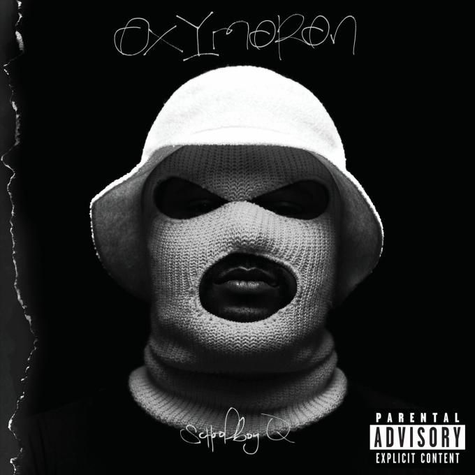

FACES de Mac miller
caja1

Malcolm James McCormick (January 19, 1992 – September 7, 2018), known professionally as Mac Miller, was an American rapper and record producer. Miller began his career in Pittsburgh's hip hop scene in 2007, at the age of fifteen. In 2010, he signed a record deal with independent label Rostrum Records and released his breakthrough mixtapes K.I.D.S. (2010) and Best Day Ever (2011). Miller's debut studio album, Blue Slide Park (2011), became the first independently distributed debut album to top the US Billboard 200 since 1995.
In 2013, he founded the record label imprint REMember Music. After his second studio album, Watching Movies with the Sound Off (2013), he left Rostrum and signed with the major label Warner Bros. Records in 2014. With them, he released four studio albums: GO:OD AM (2015), The Divine Feminine (2016), Swimming (2018), and the posthumous Circles (2020). For Swimming, he was posthumously nominated for a Grammy Award for Best Rap Album. He also served as a record producer for various artists, including himself, under the pseudonym Larry Fisherman.
Miller struggled with addiction and substance abuse, which was often referenced in his lyrics.[1] On September 7, 2018, Miller died from an accidental drug overdose of cocaine, fentanyl, and alcohol at his home, aged 26.

caja2
I Don't Like Shit, I Don't Go Outside de Earl Sweatshirt

Thebe Neruda Kgositsile (born February 24, 1994), also known by his stage name Earl Sweatshirt, is an American rapper, songwriter, and record producer. Kgositsile was originally known by the moniker Sly Tendencies when he began rapping in 2008, but soon changed his name when Tyler, the Creator invited him to join his alternative hip hop collective Odd Future in late 2009.
He gained recognition and critical praise for his debut mixtape, Earl, which he released in March 2010, at the young age of 16. Shortly after its release, his mother sent him to a boarding school in Samoa for at-risk teens for a year and a half. He was unable to record music during his tenure there, but returned to Los Angeles in February 2012, just before his eighteenth birthday. Kgositsile rejoined Odd Future and started producing new music, releasing his debut studio album, Doris, in August 2013.[1][2]
His second album, I Don't Like Shit, I Don't Go Outside, followed in March 2015, and his third, Some Rap Songs, released in November 2018. His projects have all received widespread critical praise. He is currently signed to his independent label Tan Cressida, which was formerly distributed by Columbia Records. On November 1, 2019, Kgositsile released an EP titled Feet of Clay.[3]
Oxymoron de School boy Q

Quincy Matthew Hanley (born October 26, 1986), better known by his stage name Schoolboy Q (stylized as ScHoolboy Q), is an American rapper from South Central Los Angeles, California. In 2009, Hanley signed to Carson-based independent record label Top Dawg Entertainment (TDE) and in late 2011, secured a recording contract with major label Interscope Records. Hanley is also a member of the hip-hop supergroup Black Hippy, alongside label-mates and fellow California-based rappers Ab-Soul, Jay Rock, and Kendrick Lamar.
In 2008, Hanley released his first full-length project, a mixtape titled ScHoolboy Turned Hustla. He later released a follow-up in 2009, titled Gangsta & Soul. He then returned in January 2011, with his first independent album, titled Setbacks. The project, released under TDE, to digital retailers only, reached number 100 on the US Billboard 200 chart. A little over a year later, his second independent album Habits & Contradictions, was also released exclusively to digital retailers. The album received generally favorable reviews and debuted at number 111 on the US Billboard 200.
After signing with Interscope, Hanley subsequently began recording his major-label debut studio album, titled Oxymoron (2014). The album debuted at number one on the US Billboard 200 and was preceded by the singles "Collard Greens" (featuring Kendrick Lamar), "Man of the Year", "Studio" (featuring BJ the Chicago Kid) and "Hell of a Night". The first three singles all charted on the US Billboard Hot 100 chart, with "Studio" remaining his best-performing as a lead artist to date.